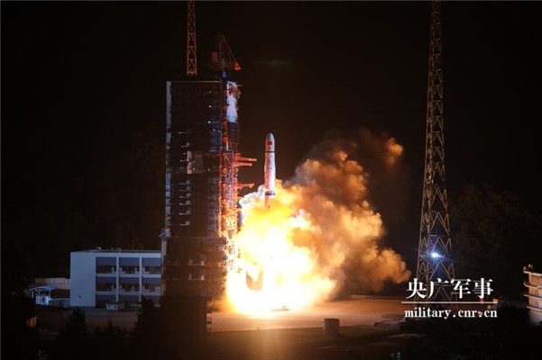

2018年05月21日 06:32:30
来源：澎湃新闻网

新华社西昌5月21日消息，21日5时28分，我国在西昌卫星发射中心用长征四号丙运载火箭，成功将探月工程嫦娥四号任务“鹊桥”号中继星发射升空。这是世界首颗运行于地月拉格朗日L2点（简称地月L2点）的通信卫星，将为2018年底择机实施的嫦娥四号月球背面软着陆探测任务提供地月间的中继通信。
长征四号丙运载火箭飞行25分钟后，星箭分离，将“鹊桥”直接送入近地点高度200公里，远地点高度40万公里的预定地月转移轨道，卫星太阳翼和中继通信天线相继展开正常。后续，“鹊桥”将经中途修正、近月制动和月球借力，进入月球至地月L2点的转移轨道，通过3次捕获控制和修正后，最终进入环绕地月L2点的使命轨道，地月L2点是卫星相对于地球和月球基本保持静止的一个空间点。
中国探月工程总设计师、中国工程院院士吴伟仁表示，由于月球有一面总是背对着地球，当嫦娥四号进行世界首次月球背面软着陆和巡视勘察任务时，将受月球自身遮挡，无法直接与地球进行测控通信和数据传输，而“鹊桥”则相当于架设在嫦娥四号与地球间的“通信中继站”。
中国航天科技集团有限公司五院“鹊桥”号中继星项目经理张立华说，“鹊桥”还携带了由荷兰研制的低频射电探测仪，未来将开展在轨科学探测试验。
执行此次发射任务的长征四号丙运载火箭是长征四号系列运载火箭第一次在西昌卫星发射中心承担发射任务。这是长征系列运载火箭第275次发射。此次还搭载发射了“龙江一号”“龙江二号”两颗月球轨道编队超长波天文观测微卫星。
据悉，探月工程重大专项由国防科工局组织实施。此次中继星任务中，工程总体由国防科工局探月与航天工程中心承担；卫星、运载火箭分别由中国航天科技集团有限公司中国空间技术研究院、上海航天技术研究院研制生产；发射和测控任务由中国卫星发射测控系统部负责；地面应用系统由中国科学院国家天文台承担。